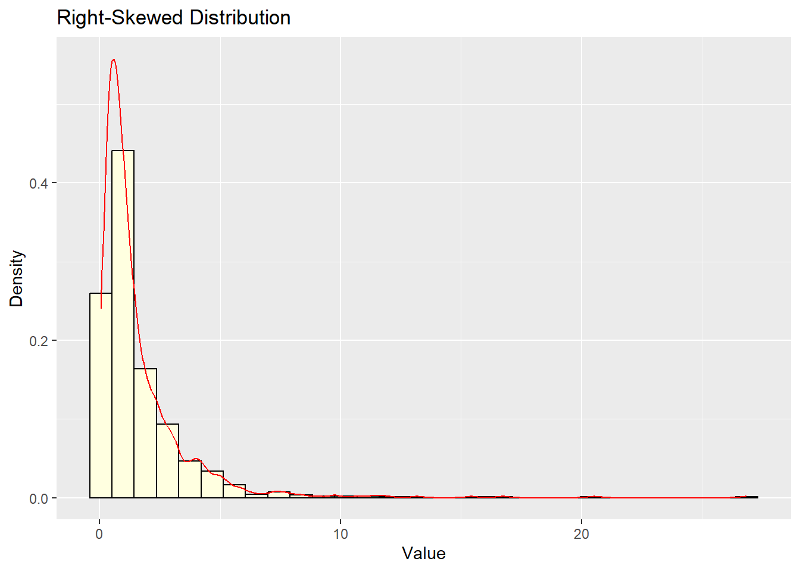
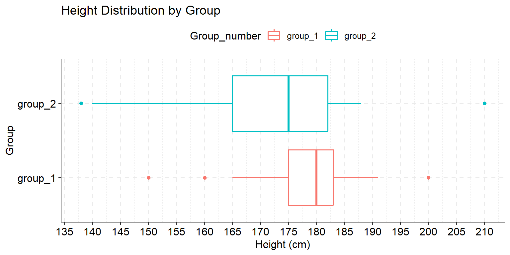

5Fundamentals of Univariate Descriptive Statistics
5.1 Introduction
Univariate descriptive statistics help us summarize and understand the characteristics of a single variable. When we collect data, we often have many observations that are difficult to interpret without some form of summary. Descriptive statistics allow us to:
Identify the “typical” or “central” value in our data
Understand how spread out or variable the data are
Detect unusual observations (outliers)
Communicate findings efficiently to others
In this chapter, we will explore the fundamental tools for describing numerical data, starting with basic notation and progressing through measures of central tendency, dispersion, and visualization techniques.
5.2 Overview: Four Types of Descriptive Measures
Univariate descriptive statistics can be organized into four main categories, each addressing a different question about our data:
1. Measures of Central Tendency
Question: What is the “typical” or “average” value?
Common measures:
Mean (arithmetic average)
Median (middle value)
Mode (most frequent value)
Purpose: These measures help us identify where the “center” of the data is located. They provide a single value that represents the entire dataset.
2. Measures of Variability (Dispersion)
Question: How spread out are the data? How much do observations differ from each other?
Common measures:
Range (max - min)
Variance (average squared deviation from mean)
Standard deviation (square root of variance)
Interquartile range (IQR - spread of middle 50%)
Purpose: These measures tell us whether observations cluster tightly around the center or are widely dispersed. Two datasets can have the same mean but very different variability.
3. Measures of Relative Position (Standing)
Question: Where does a particular observation stand relative to others? What proportion of data falls below a given value?
Common measures:
Quantiles (values that divide a dataset into equal-sized subgroups, where each subgroup has an equal probability of containing an observation)
Percentiles (divide data into 100 parts)
Quartiles (divide data into 4 parts)
Standardized scores (z-scores)
Purpose: These measures help us understand the position of individual observations within the overall distribution. They answer questions like “How does this student’s score compare to others?”
4. Measures of Shape
Question: What is the overall form or pattern of the distribution?
Common measures:
Skewness (asymmetry - is there a long tail on one side?)
Kurtosis (tailedness - are there many extreme values?)
Modality (number of peaks - unimodal, bimodal, multimodal)
Purpose: These measures describe the overall pattern of the distribution. While we won’t calculate these numerically in this course, we will identify shape characteristics visually using histograms and boxplots.
Relationship between categories:
These four types of measures complement each other. A complete description of univariate data typically includes:
At least one measure of central tendency (mean or median)
At least one measure of variability (standard deviation or IQR)
Visual displays (histogram, boxplot) that reveal shape
Information about relative position when comparing specific observations
In the sections that follow, we will explore each of these categories in detail, starting with the mathematical notation needed to express these concepts precisely.
5.3 Measurement Scales and Appropriate Statistics
Before diving into specific statistical measures, it’s important to understand that not all statistics are appropriate for all types of data. The type of measurement scale determines which statistical measures we can meaningfully use.
The Four Measurement Scales
1. Nominal Scale
Categories with no inherent order (e.g., gender, country, political party affiliation, eye color).
Properties: Categories are different, but we cannot say one is “greater than” another.
2. Ordinal Scale
Categories with a meaningful order, but intervals between categories are not necessarily equal (e.g., education level: elementary/high school/bachelor’s/master’s/PhD; survey responses: strongly disagree/disagree/neutral/agree/strongly agree).
Properties: We can rank observations, but we cannot quantify the difference between ranks.
3. Interval Scale
Numeric scale with equal intervals, but no true zero point (e.g., temperature in Celsius or Fahrenheit, calendar years).
Properties: Differences are meaningful (20°C to 30°C is the same change as 30°C to 40°C), but ratios are not (20°C is not “twice as hot” as 10°C).
4. Ratio Scale
Numeric scale with equal intervals AND a true zero point (e.g., height, weight, income, age, distance).
Properties: Both differences and ratios are meaningful (20 kg is twice as heavy as 10 kg).
Which Statistics for Which Scales?
Measure
Nominal
Ordinal
Interval
Ratio
Mode
✓
✓
✓
✓
Median
✗
✓
✓
✓
Mean
✗
✗
✓
✓
Range
✗
✗
✓
✓
Variance/Std. Dev.
✗
✗
✓
✓
IQR
✗
✓
✓
✓
Quantiles/Percentiles
✗
✓
✓
✓
Key insights:
Nominal data: Only the mode makes sense. We can count frequencies, but we cannot calculate means or medians.
Ordinal data: The median and IQR are appropriate because they only require ordering. The mean is not appropriate because it assumes equal intervals.
Interval/Ratio data: All measures are appropriate. These are the most flexible measurement scales.
Example illustrating why scale matters:
Consider education levels: elementary (1), high school (2), bachelor’s (3), master’s (4), PhD (5).
Mode: Valid - “Most respondents have a bachelor’s degree”
Median: Valid - “The median education level is bachelor’s degree”
Mean: Problematic - “The mean education level is 3.2” is hard to interpret because the intervals between levels are not equal (the difference between elementary and high school is not the same as the difference between master’s and PhD)
Throughout this chapter, we will focus primarily on interval and ratio data, where all statistical measures are appropriate. However, keep these distinctions in mind when working with different types of data in practice.
5.4 Sigma Notation
Before we dive into statistical measures, we need to understand sigma notation, which provides a compact way to express the sum of many values.
The Greek letter \Sigma (capital sigma) means “sum.” When we write:
\sum_{i=1}^{n} x_i
This means: “Add up all values of x from the first observation (i=1) to the last observation (i=n).”
Breaking down the notation:
\Sigma = the summation operator (“add these up”)
i=1 (below \Sigma) = start with the first observation
n (above \Sigma) = continue until the n-th observation
x_i = the value of variable x for observation i
Example:
Suppose we have five observations: x_1 = 2, x_2 = 5, x_3 = 3, x_4 = 8, x_5 = 7
\sum_{i=1}^{n} c \cdot x_i = c \sum_{i=1}^{n} x_i \text{ (where } c \text{ is a constant)}
5.5 Data Distribution and Frequency Distribution
What is a Data Distribution?
A data distribution refers to how values in a dataset are spread across the possible range of values. Understanding the distribution helps us see patterns, identify typical values, and detect unusual observations.
When we talk about a distribution, we are asking: “What values occur in our data, and how often does each value (or range of values) appear?”
Normal (Bell Curve) shape: https://mathspace.co/textbooks/syllabuses/Syllabus-786/topics/Topic-12842/subtopics/Subtopic-171745/?activeTab=theory
Frequency Distribution
A frequency distribution organizes data by showing how many times each value (or range of values) occurs. This can be presented as:
A table showing values and their counts
A relative frequency distribution (showing proportions or percentages)
A cumulative frequency distribution (showing running totals)
Example:
Suppose we surveyed 20 students about how many books they read last month:
Frequency: The count of students who read that number of books
Relative Frequency: The proportion of all students (e.g., 0.20 = 20% read 5 books)
Cumulative Frequency: The running total (e.g., 10 students read 5 or fewer books)
library(ggplot2)library(patchwork)set.seed(123)# 1. UNIFORM DISTRIBUTIONuniform_data <-data.frame(x =runif(10000, min =0, max =100))p1 <-ggplot(uniform_data, aes(x = x)) +geom_histogram(bins =50, fill ="steelblue", alpha =0.7) +labs(title ="Uniform Distribution",subtitle ="Example: Lottery numbers, random assignment",x ="Value", y ="Frequency") +theme_minimal(base_size =12)# 2. NORMAL DISTRIBUTIONnormal_data <-data.frame(x =rnorm(10000, mean =100, sd =15))p2 <-ggplot(normal_data, aes(x = x)) +geom_histogram(bins =50, fill ="darkgreen", alpha =0.7) +labs(title ="Normal Distribution",subtitle ="Example: IQ scores (mean=100, sd=15)",x ="IQ Score", y ="Frequency") +theme_minimal(base_size =12)# 3. LOG-NORMAL DISTRIBUTIONlognormal_data <-data.frame(x =rlnorm(10000, meanlog =10.5, sdlog =0.5))p3 <-ggplot(lognormal_data, aes(x = x)) +geom_histogram(bins =50, fill ="darkred", alpha =0.7) +labs(title ="Log-Normal Distribution",subtitle ="Example: Income distribution",x ="Income (PLN)", y ="Frequency") +theme_minimal(base_size =12)# 4. EXPONENTIAL DISTRIBUTIONexponential_data <-data.frame(x =rexp(10000, rate =0.5))p4 <-ggplot(exponential_data, aes(x = x)) +geom_histogram(bins =50, fill ="purple", alpha =0.7) +labs(title ="Exponential Distribution",subtitle ="Example: Time between votes being cast at a polling station",x ="Time (minutes)", y ="Frequency") +theme_minimal(base_size =12)# 5. BIMODAL DISTRIBUTIONbimodal_data <-data.frame(x =c(rnorm(3000, mean =45, sd =8), # students who didn't study wellrnorm(7000, mean =75, sd =7)) # students who studied well)p5 <-ggplot(bimodal_data, aes(x = x)) +geom_histogram(bins =50, fill ="orange", alpha =0.7) +labs(title ="Bimodal Distribution",subtitle ="Example: Exam scores (two groups of students)",x ="Score (0-100)", y ="Frequency") +theme_minimal(base_size =12)# 6. BETA DISTRIBUTIONbeta_data <-data.frame(x =rbeta(10000, shape1 =5, shape2 =2) *100)p6 <-ggplot(beta_data, aes(x = x)) +geom_histogram(bins =50, fill ="navy", alpha =0.7) +labs(title ="Beta Distribution (Negatively Skewed)",subtitle ="Example: Exam scores (easier test)",x ="Score (0-100)", y ="Frequency") +theme_minimal(base_size =12)# Combine plots(p1 | p2) / (p3 | p4) / (p5 | p6)
Figure 5.1
5.6 Measures of Central Tendency
Measures of central tendency tell us about the “typical” or “central” value in a dataset. The three most common measures are the mean, median, and mode.
Applicable measurement scales:
Mode: Nominal, Ordinal, Interval, Ratio
Median: Ordinal, Interval, Ratio (requires ordering)
Mean: Interval, Ratio (requires equal intervals and arithmetic operations)
Mean (Arithmetic Average)
The mean is the sum of all values divided by the number of observations. It represents the arithmetic average.
Plain English: The mean is what we get if we could redistribute all the values equally among all observations. If five students scored a total of 430 points, they would each get 86 points if we divided the total evenly.
The Mean as a Balancing Point
One of the most important conceptual ways to understand the mean is to think of it as a balancing point or center of gravity of the data.
Imagine placing weights on a seesaw at positions corresponding to your data values. The mean is the point where the seesaw would be perfectly balanced.
Mathematical insight:
The sum of deviations from the mean always equals zero:
\sum_{i=1}^{n} (x_i - \bar{x}) = 0
This means that positive deviations (values above the mean) exactly cancel out negative deviations (values below the mean).
Let’s consider a dataset X = \{1, 2, 6, 7, 9\} on a number line, imagining it as a seesaw:
This shows why the mean is the unique balance point, where:
\sum_{i=1}^n (x_i - \mu) = 0
The seesaw will always tilt unless the support point is placed exactly at the mean! 🎪
This visualization shows how the arithmetic mean (5) acts as a balance point for our dataset {1, 2, 6, 7, 9}:
Left side of the mean:
Points with values 1 and 2
Close together (difference of 1 unit)
Distances from mean: 4 and 3 units
Sum of “pull” = 7 units
Right side of the mean:
Points with values 6, 7, and 9
More spread out (differences of 1 and 2 units)
Distances from mean: 1, 2, and 4 units
Sum of “pull” = 7 units
Key observations:
The mean (5) is a balance point, even though:
There are only 2 points on the left (1, 2)
There are 3 points on the right (6, 7, 9)
Green arrows show distances from the mean
Balance is maintained because:
Sum of distances balances out: (5-1) + (5-2) = (6-5) + (7-5) + (9-5)
Total sum of distances = 7 units on each side
The number of points doesn’t matter—only the total distance!
#| warning: false#| echo: false#| fig.width: 12#| fig.height: 7#| fig.align: 'center'library(ggplot2)library(dplyr)# Create sample data - using the consistent datasetvalues <-c(1, 2, 6, 7, 9)mean_val <-mean(values)# Create dataframe for plottingdata <-data.frame(x = values,y =rep(0, length(values)),arrow_height =c(0.35, 0.15, 0.35, 0.15, 0.35), # Separated heights for arrowsvalue_label_height =c(0.25, 0.05, 0.25, 0.05, 0.25) # Labels between arrows)# Create the visualizationggplot() +# Draw the fulcrum trianglegeom_polygon(data =data.frame(x =c(mean_val -0.3, mean_val +0.3, mean_val),y =c(-0.2, -0.2, 0) ), aes(x = x, y = y), fill ="darkgray") +# Draw the lever/beamgeom_segment(aes(x =min(values) -1, xend =max(values) +1, y =0, yend =0),color ="brown", linewidth =2) +# Add points with different colors for left and right sidegeom_point(data = data %>%mutate(side =ifelse(x < mean_val, "left", "right")), aes(x = x, y = y, color = side), size =10) +scale_color_manual(values =c("left"="royalblue", "right"="darkblue")) +# Add mean pointgeom_point(aes(x = mean_val, y =0), color ="red", size =5) +# First set of arrows (upper)geom_segment(data =subset(data, arrow_height >0.3), aes(x = x, xend = mean_val,y = arrow_height, yend = arrow_height),arrow =arrow(length =unit(0.2, "cm"), ends ="both"),color ="darkgreen") +# Second set of arrows (lower)geom_segment(data =subset(data, arrow_height <0.3), aes(x = x, xend = mean_val,y = arrow_height, yend = arrow_height),arrow =arrow(length =unit(0.2, "cm"), ends ="both"),color ="darkgreen") +# Add value labels between arrowsgeom_label(data = data, aes(x = x, y = value_label_height, label = x),size =4.5,fill ="white",label.padding =unit(0.2, "lines")) +# Add mean labelgeom_text(aes(x = mean_val, y =-0.4, label =paste("Mean =", round(mean_val, 2))),color ="red", size =4.5, fontface ="bold") +# Add distance labelsgeom_text(data = data, aes(x = (x + mean_val)/2, y = arrow_height +0.08,label =round(abs(x - mean_val), 2)),color ="darkgreen",size =3.5) +# Customize the themetheme_minimal() +labs(title ="Understanding Arithmetic Mean as a Balance Point",subtitle =paste("Dataset: {1, 2, 6, 7, 9} | Mean =", round(mean_val, 2), "balances uneven distances on both sides"),x ="Values",y =NULL) +theme(axis.text.y =element_blank(),axis.ticks.y =element_blank(),panel.grid.major.y =element_blank(),panel.grid.minor.y =element_blank(),plot.title =element_text(hjust =0.5, size =14, face ="bold"),plot.subtitle =element_text(hjust =0.5, size =11),legend.position ="none") +coord_cartesian(ylim =c(-0.8, 0.8), expand =TRUE)

Weighted Arithmetic Mean
In many situations, we work with frequency distributions where values occur multiple times. Instead of writing out each value repeatedly, we can use a weighted mean that accounts for how often each value appears.
For Absolute Frequencies:
When we have a frequency distribution with values x_1, x_2, \ldots, x_k occurring f_1, f_2, \ldots, f_k times respectively (where n = \sum_{i=1}^{k} f_i), the weighted mean is:
Both methods give the same result: students study an average of 12 hours per week.
Plain English: When some values appear more frequently than others, we “weight” them by how often they occur. A value that appears 8 times contributes 8 times more to the average than a value that appears once.
Other Types of Means: Geometric and Harmonic
While the arithmetic mean is by far the most commonly used measure of central tendency in social sciences, two other types of means exist for special purposes:
Example: Average speed when distances are equal but times differ
Important: All values must be non-zero
Important relationship: For any positive dataset: \bar{x}_H \leq \bar{x}_G \leq \bar{x} (harmonic ≤ geometric ≤ arithmetic)
In most social science applications, these alternative means are rarely needed. Stick with the arithmetic mean unless you have a specific theoretical reason to use another type.
Median
The median is the middle value when data are arranged in order. It divides the dataset into two equal halves. The median is the middle value that separates the ordered data into two equal-sized groups, where the median itself is not included in either group when n is odd.
Applicable to: Ordinal, Interval, and Ratio data (requires ordering)
How to find the median:
Sort the data from smallest to largest
If n is odd: the median is the middle value at position \frac{n+1}{2}
If n is even: the median is the average of the two middle values at positions \frac{n}{2} and \frac{n}{2} + 1
Example with odd n:
Data: 3, 7, 8, 12, 15 (already sorted, n = 5)
Position of median: \frac{5+1}{2} = 3
Median = 8 (the third value)
Example with even n:
Data: 3, 7, 8, 12, 15, 20 (already sorted, n = 6)
The two middle values are at positions 3 and 4: 8 and 12
\text{Median} = \frac{8 + 12}{2} = 10
Plain English: The median is the value that sits in the middle when we line up all observations from smallest to largest.
Key advantage: The median is resistant to outliers. Extreme values don’t affect it much, making it useful when data contain outliers.
Mode
The mode is the value that appears most frequently in the dataset.
Applicable to: Nominal, Ordinal, Interval, and Ratio data (all scales)
Properties:
A dataset can have no mode (all values appear equally often)
A dataset can have one mode (unimodal)
A dataset can have multiple modes (bimodal, multimodal)
Example:
Data: 2, 3, 3, 5, 5, 5, 7, 8, 8
Mode = 5 (appears three times, more than any other value)
Plain English: The mode tells us which value is most common or typical in the dataset. It’s particularly useful for categorical data (e.g., “blue” is the most common eye color in the sample).
Comparing Mean, Median, and Mode
# Generate distributionsset.seed(42)left_skew <-rbeta(2000, 8, 2) *50+30symmetric <-rnorm(2000, 55, 8)right_skew <-rbeta(2000, 2, 8) *50+30# Function to estimate mode using densityget_mode <-function(x) { d <-density(x) d$x[which.max(d$y)]}# Vertical layoutpar(mfrow =c(3, 1), mar =c(4, 4, 3, 1))# Left-skewedhist(left_skew, main ="Left-Skewed Distribution", xlab ="Value", col ="lightblue", breaks =30, xlim =c(25, 85))abline(v =mean(left_skew), col ="red", lwd =2.5, lty =1)abline(v =median(left_skew), col ="blue", lwd =2.5, lty =2)abline(v =get_mode(left_skew), col ="darkgreen", lwd =2.5, lty =3)legend("topleft", legend =c(sprintf("Mean (%.1f)", mean(left_skew)),sprintf("Median (%.1f)", median(left_skew)),sprintf("Mode (%.1f)", get_mode(left_skew))),col =c("red", "blue", "darkgreen"), lty =c(1, 2, 3), lwd =2.5, cex =0.9)# Symmetrichist(symmetric, main ="Symmetric Distribution", xlab ="Value", col ="lightgreen", breaks =30,xlim =c(25, 85))abline(v =mean(symmetric), col ="red", lwd =2.5, lty =1)abline(v =median(symmetric), col ="blue", lwd =2.5, lty =2)abline(v =get_mode(symmetric), col ="darkgreen", lwd =2.5, lty =3)legend("topleft", legend =c(sprintf("Mean (%.1f)", mean(symmetric)),sprintf("Median (%.1f)", median(symmetric)),sprintf("Mode (%.1f)", get_mode(symmetric))),col =c("red", "blue", "darkgreen"), lty =c(1, 2, 3), lwd =2.5, cex =0.9)# Right-skewedhist(right_skew, main ="Right-Skewed Distribution", xlab ="Value", col ="lightyellow", breaks =30,xlim =c(25, 85))abline(v =mean(right_skew), col ="red", lwd =2.5, lty =1)abline(v =median(right_skew), col ="blue", lwd =2.5, lty =2)abline(v =get_mode(right_skew), col ="darkgreen", lwd =2.5, lty =3)legend("topright", legend =c(sprintf("Mean (%.1f)", mean(right_skew)),sprintf("Median (%.1f)", median(right_skew)),sprintf("Mode (%.1f)", get_mode(right_skew))),col =c("red", "blue", "darkgreen"), lty =c(1, 2, 3), lwd =2.5, cex =0.9)
Key insights:
In symmetric distributions, mean ≈ median ≈ mode
In right-skewed distributions (long tail to the right), mean > median > mode
In left-skewed distributions (long tail to the left), mean < median < mode
The mean is pulled toward the tail, the median stays in the middle, and the mode remains at the peak.
5.7 Measures of Dispersion (Variability)
While measures of central tendency tell us about typical values, measures of dispersion tell us how spread out the data are. Two datasets can have the same mean but very different spreads.
Plain English: The range tells us the span from the smallest to the largest observation. It gives a quick sense of spread but is highly sensitive to outliers (since it only uses two values).
Variance and Standard Deviation
Visualizing Variability: A Working Example
To understand variance and standard deviation, let’s work through a complete example with data X = (2, 2, 3, 4, 5, 5). We’ll treat these as sequential observations (like measurements over time [t]) to visualize how individual values deviate from their mean.
X <-c(2, 2, 3, 4, 5, 5)mean_X <-mean(X)plot(X, type ="b", pch =19, col ="darkblue", xlab ="Observation", ylab ="Value",main ="Deviations from the Mean",ylim =c(0, 6))abline(h = mean_X, col ="red", lwd =2, lty =2)text(1, mean_X +0.3, paste("Mean =", mean_X), col ="red", pos =4)# Add deviation linesfor(i in1:length(X)) {segments(i, mean_X, i, X[i], col ="gray", lty =3)}
The gray dashed lines show the deviations from the mean. Variance will quantify the average squared length of these deviations.
Why Do We Square Deviations?
Why not just average the deviations (x_i - \bar{x}) directly?
Problem: If we simply averaged the deviations, they would always sum to zero (as we saw with the balancing point property). Let’s verify this with our example:
x_i
x_i - \bar{x}
2
-1.5
2
-1.5
3
-0.5
4
0.5
5
1.5
5
1.5
Sum
0.0
This happens because positive deviations (above the mean) exactly cancel negative deviations (below the mean):
\sum_{i=1}^{n}(x_i - \bar{x}) = 0
Solutions to this problem:
Square the deviations (variance approach): (x_i - \bar{x})^2 makes all values positive
Take absolute values (alternative approach): |x_i - \bar{x}| also makes all values positive
Why squaring is preferred:
Mathematical convenience: Squaring has better mathematical properties for statistical theory
Emphasizes larger deviations: Squaring gives more weight to extreme deviations (a point 10 units away contributes 100 to variance, while a point 5 units away contributes only 25)
The units problem: Because we squared the deviations, variance is in squared units. If our data are in centimeters, variance is in square centimeters. This is why we often prefer the standard deviation.
Variance
The variance measures the average squared deviation from the mean. It quantifies how far, on average, each observation is from the mean.
Applicable to: Interval and Ratio data
Manual Calculation: Population vs. Sample Variance
Let’s continue with our example X = (2, 2, 3, 4, 5, 5) and calculate the squared deviations:
x_i
x_i - \bar{x}
(x_i - \bar{x})^2
2
-1.5
2.25
2
-1.5
2.25
3
-0.5
0.25
4
0.5
0.25
5
1.5
2.25
5
1.5
2.25
Sum
9.5
Population variance (if this were the entire population):
# Population variance (no Bessel correction)var_pop <-sum((X - mean_X)^2) /length(X)cat("Population variance:", var_pop, "\n")
Population variance: 1.583
Bessel’s Correction: Why n-1?
The Problem: When we use sample data to estimate population variance, the formula \frac{\sum(x_i - \bar{x})^2}{n} tends to underestimate the true population variance (we’re measuring deviations from the sample mean, not the true population mean).
The Solution: Bessel’s correction adjusts for this bias by dividing by n-1 instead of n. This produces an unbiased estimate of the population variance.
# Sample variance (with Bessel correction)# Note: R's var() function uses n-1 by defaultvar_sample <-var(X)cat("Sample variance:", var_sample, "\n")
Sample variance: 1.9
Key difference: The sample variance (1.9) is larger than the population variance (1.583), providing an unbiased estimate when working with sample data.
Plain English: The variance tells us, on average, how far squared each observation is from the mean. A larger variance means more spread-out data; a smaller variance means data cluster more tightly around the mean.
Note: In all further examples, we will use Bessel’s correction (dividing by n-1) to calculate sample variance, as this is the standard approach in inferential statistics and matches R’s default behavior in the var() and sd() functions.
Standard Deviation
The standard deviation is simply the square root of the variance. It returns us to the original units of measurement.
Applicable to: Interval and Ratio data
Formula
s = \sqrt{s^2} = \sqrt{\frac{1}{n-1}\sum_{i=1}^{n}(x_i - \bar{x})^2}
Calculation for Our Example
For our exampleX = (2, 2, 3, 4, 5, 5):
s = \sqrt{1.9} \approx 1.378
# Standard deviation# Note: R's sd() function uses n-1 by defaultsd_sample <-sd(X)cat("Sample SD:", sd_sample, "\n")
Sample SD: 1.378
Plain English: The standard deviation tells us the typical distance of observations from the mean, in the original units of measurement. It’s more interpretable than variance because it’s in the same units as the data.
Note: In many distributions (especially symmetric, bell-shaped distributions like the normal distribution), about 68% of observations fall within one standard deviation of the mean, and about 95% fall within two standard deviations.
For our example with \bar{x} = 3.5 and s \approx 1.378:
One SD below mean: 3.5 - 1.378 = 2.122
One SD above mean: 3.5 + 1.378 = 4.878
Values within this range: 2, 2, 3, 4 (4 out of 6 = 67%)
Practice Example
Let’s work through another complete example to solidify these concepts.
Data: 2, 4, 6, 8, 10
Step 1: Calculate the mean:
\bar{x} = \frac{2+4+6+8+10}{5} = \frac{30}{5} = 6
Step 2: Calculate deviations and squared deviations:
Notice: This dataset has a larger variance (10 vs. 1.9) and standard deviation (3.16 vs. 1.38) than our first example, reflecting the fact that the values are more spread out from their mean.
Weighted Variance and Standard Deviation
Just as we can calculate a weighted mean for frequency distributions, we can also calculate weighted variance and weighted standard deviation.
Plain English: Bessel’s correction (using n-1) makes the sample variance an unbiased estimator of the population variance. Without it, we would systematically underestimate the true population variance.
Interquartile Range (IQR)
The interquartile range measures the spread of the middle 50% of the data. It’s calculated as:
Applicable to: Ordinal, Interval, and Ratio data (requires ordering)
\text{IQR} = Q_3 - Q_1
where Q_1 is the first quartile (25th percentile) and Q_3 is the third quartile (75th percentile).
Plain English: The IQR tells us the range that contains the middle half of our data. It’s resistant to outliers, making it useful when extreme values are present.
Example:
Data: 2, 4, 5, 7, 8, 11, 12, 15, 18, 20
Q_1 = 5 (25% of data fall below 5)
Q_3 = 15 (75% of data fall below 15)
\text{IQR} = 15 - 5 = 10
The middle 50% of observations span 10 units.
Measures of Center and Dispersion: Summary Table
Measure
Formula/Description
When to Use
Pros
Cons
MEASURES OF CENTER
Mean (\bar{x})
\bar{x} = \frac{\sum x_i}{n}
Symmetric distributions, interval/ratio data
Uses all data points; algebraically defined; basis for advanced statistics
Sensitive to outliers; can be non-representative with skewed data; requires interval/ratio data
Median (Me)
Middle value when ordered
Skewed distributions, ordinal data, presence of outliers
Resistant to outliers; works with ordinal data
Ignores magnitude of extreme values; less efficient than mean for symmetric data; limited algebraic properties
Mode (Mo)
Most frequent value
Categorical data, bimodal distributions
Only measure for nominal data; identifies most typical case; not affected by outliers
May not exist or be non-unique; ignores most of the data; unstable with small samples
MEASURES OF DISPERSION
Range
R = x_{max} - x_{min}
Quick assessment, small datasets
Simple to calculate; intuitive interpretation; uses natural scale of data
Uses only 2 data points; extremely sensitive to outliers; increases with sample size
Interquartile Range (IQR)
IQR = Q_3 - Q_1
Skewed data, presence of outliers
Resistant to outliers; describes middle 50% of data; works with ordinal data
Ignores tails of distribution; less efficient for symmetric data; limited algebraic properties
Variance (s^2)
s^2 = \frac{\sum(x_i - \bar{x})^2}{n-1}
Theoretical work
Uses all data points; algebraically tractable; additive for independent variables
Units are squared (hard to interpret); sensitive to outliers; requires interval/ratio data
Standard Deviation (s)
s = \sqrt{s^2}
Describing spread in practice
Same units as original data; uses all data points; interpretable with empirical rule
Sensitive to outliers; requires interval/ratio data; cannot be negative
Mean Absolute Deviation (MAD)
MAD = \frac{\sum |x_i - \bar{x}|}{n}
Robust alternative to SD
More resistant to outliers than SD; same units as data; intuitive interpretation
Less commonly used; lacks some algebraic properties; not standard in statistical software
Key Principles:
Symmetric data: use mean and standard deviation
Skewed data or outliers present: use median and IQR
Categorical data: use mode only
Reporting: always report a measure of center with a measure of dispersion
5.8 Measures of Relative Position
Measures of relative position help us understand where a particular observation stands within the overall distribution. These measures answer questions like “How does this value compare to others in the dataset?”
Applicable measurement scales:
Quantiles/Percentiles/Quartiles: Ordinal, Interval, Ratio (requires ordering)
Quantiles
A quantile is a value that divides a dataset into equal-sized groups. More formally, the p-th quantile is a value below which a proportion p of the data falls.
Applicable to: Ordinal, Interval, and Ratio data
Definition:
For a proportion p (where 0 < p < 1), the p-th quantile q_p satisfies:
At least proportion p of observations are less than or equal to q_p
At least proportion (1-p) of observations are greater than or equal to q_p
Plain English: Quantiles are “cut points” that divide our sorted data into segments. They tell us the value below which a certain proportion of our data falls.
Important note: Quantiles are a general concept. Percentiles, quartiles, and the median are all specific types of quantiles.
Examples of quantiles:
The 0.5 quantile (50th percentile) is the median - half the data fall below it
The 0.25 quantile (25th percentile) is the first quartile (Q_1)
The 0.75 quantile (75th percentile) is the third quartile (Q_3)
The 0.90 quantile (90th percentile) means 90% of data fall below this value
Percentiles
A percentile is a specific type of quantile that divides the data into 100 equal parts. The k-th percentile is the value below which k percent of observations fall.
Applicable to: Ordinal, Interval, and Ratio data
Relationship to quantiles:
The k-th percentile corresponds to the \frac{k}{100} quantile. For example:
25th percentile = 0.25 quantile
50th percentile = 0.50 quantile = median
90th percentile = 0.90 quantile
Examples:
The 50th percentile is the median (50% of data fall below it)
The 90th percentile means 90% of observations fall below this value
The 10th percentile means only 10% of observations fall below this value
Interpretation: If you score at the 85th percentile on a test, you performed better than 85% of test-takers.
Quartiles
Quartiles are specific quantiles that divide the data into four equal parts. They are the 25th, 50th, and 75th percentiles:
Applicable to: Ordinal, Interval, and Ratio data
Q_1 (First quartile or 25th percentile): 25% of data fall below this value
Q_2 (Second quartile or 50th percentile): The median - 50% fall below
Q_3 (Third quartile or 75th percentile): 75% of data fall below this value
Think of quartiles as special numbers that split your ordered data into four equal parts.
Doane, D. P., & Seward, L. W. (2016). Applied statistics in business and economics. Mcgraw-Hill.
# Visualization of quartilesset.seed(456)example_data <-sort(rnorm(100, 50, 10))par(mar =c(5, 4, 4, 2))plot(1:100, example_data, pch =19, cex =0.8, col ="gray40",xlab ="Observation (sorted)", ylab ="Value",main ="Quartiles Divide Data into Four Equal Parts")# Add quartile linesabline(h =quantile(example_data, 0.25), col ="blue", lwd =2, lty =2)abline(h =quantile(example_data, 0.50), col ="red", lwd =2, lty =1)abline(h =quantile(example_data, 0.75), col ="blue", lwd =2, lty =2)# Add shaded regionsrect(0, min(example_data), 101, quantile(example_data, 0.25), col =rgb(0, 0, 1, 0.1), border =NA)rect(0, quantile(example_data, 0.25), 101, quantile(example_data, 0.50), col =rgb(0, 1, 0, 0.1), border =NA)rect(0, quantile(example_data, 0.50), 101, quantile(example_data, 0.75), col =rgb(1, 1, 0, 0.1), border =NA)rect(0, quantile(example_data, 0.75), 101, max(example_data), col =rgb(1, 0, 0, 0.1), border =NA)# Labelstext(95, quantile(example_data, 0.25), "Q1 (25%)", pos =3, font =2)text(95, quantile(example_data, 0.50), "Q2 (50%)", pos =3, font =2)text(95, quantile(example_data, 0.75), "Q3 (75%)", pos =3, font =2)legend("topleft", legend =c("Each region contains 25% of observations"),bty ="n", cex =1.1)
Computing Quartiles: The Tukey Method
There are several methods for computing quartiles. In this course, we use the Tukey method (also called the hinges method):
Steps:
Find the median of the entire dataset
Exclude the median if n is odd
Q_1 = median of the lower half
Q_3 = median of the upper half
Example with even n:
Data: 2, 4, 5, 7, 8, 10, 12, 15 (n = 8)
Median position: between positions 4 and 5 → Median = \frac{7+8}{2} = 7.5
Note: R’s quantile() function has multiple methods. The Tukey method corresponds to type = 2, while R’s default is type = 7.
5.9 Measures of Shape
Measures of shape describe the overall form or pattern of the distribution. While we typically assess shape visually using histograms and boxplots, it’s important to understand the key concepts.
Skewness (Asymmetry)
Skewness refers to the asymmetry of a distribution. It tells us whether the distribution has a longer tail on one side.
Types of skewness:
Symmetric (no skew): The distribution looks the same on both sides of the center. Mean ≈ Median.
Right-skewed (positive skew): Long tail extends to the right. Mean > Median. Most values cluster on the left, with a few large values pulling the tail.
Left-skewed (negative skew): Long tail extends to the left. Mean < Median. Most values cluster on the right, with a few small values pulling the tail.
Plain English: Skewness tells us which direction the “tail” points. Income distributions are typically right-skewed (most people earn moderate incomes, but a few earn extremely high incomes). Test scores on an easy exam might be left-skewed (most students score high, but a few score very low).
High kurtosis: Heavy tails with many outliers; sharp peak in center
Low kurtosis: Light tails with few outliers; flatter peak
Plain English: Kurtosis tells us whether extreme values are common or rare in our data. Financial returns often have high kurtosis - most days see small changes, but occasionally there are very large movements (market crashes or rallies).
Low kurtosis distributions have fewer extreme values and a flatter peak
High kurtosis distributions have more extreme values (heavy tails) and a sharper peak
Normal distribution serves as the reference point for kurtosis comparisons
Modality (Number of Peaks)
Modality refers to the number of distinct peaks or “modes” in the distribution.
Types:
Unimodal: One clear peak
Bimodal: Two distinct peaks
Multimodal: Three or more peaks
Uniform: No peaks; all values roughly equally common
Plain English: The number of peaks can reveal important features of your data. A bimodal distribution might indicate two distinct subgroups (e.g., heights of adults might show peaks for men and women).
# Visualize different shapesset.seed(789)par(mfrow =c(1, 3), mar =c(4, 4, 3, 1))# Unimodal symmetricsymmetric_data <-rnorm(1000, 50, 10)hist(symmetric_data, breaks =30, main ="Unimodal Symmetric", xlab ="Value", col ="lightblue", probability =TRUE)lines(density(symmetric_data), col ="darkblue", lwd =2)# Right-skewedskewed_data <-rexp(1000, 1/20) +20hist(skewed_data, breaks =30, main ="Right-Skewed (Unimodal)", xlab ="Value", col ="lightgreen", probability =TRUE)lines(density(skewed_data), col ="darkgreen", lwd =2)# Bimodalbimodal_data <-c(rnorm(500, 30, 5), rnorm(500, 60, 5))hist(bimodal_data, breaks =30, main ="Bimodal", xlab ="Value", col ="lightyellow", probability =TRUE)lines(density(bimodal_data), col ="orange", lwd =2)
Visual assessment: We primarily identify shape characteristics through:
Histograms: Show the overall form, number of peaks, and direction of skew
Boxplots: Reveal skewness through whisker lengths and median position
Density plots: Smooth curves that highlight the overall pattern
5.10 Visualization: Histograms
A histogram displays the frequency distribution of numerical data by dividing the range into bins (intervals) and showing the count or proportion of observations in each bin.
Histogram Construction
Key decisions:
Number of bins: Too few bins lose detail; too many bins create noise
Bin boundaries: Should bins be [a, b) (closed on left, open on right) or (a, b] (open on left, closed on right)?
Y-axis scale: Frequency counts, relative frequencies, or density?
Choosing the Optimal Number of Bins
Several rules help determine an appropriate number of bins:
1. Sturges’ Rule (default in R):
k = \lceil \log_2(n) + 1 \rceil
where n is the sample size. Works well for symmetric, unimodal distributions.
2. Scott’s Rule:
\text{Bin width} = \frac{3.5 \cdot s}{n^{1/3}}
where s is the sample standard deviation. More robust to outliers than Sturges’ rule.
3. Freedman-Diaconis Rule:
\text{Bin width} = \frac{2 \cdot IQR}{n^{1/3}}
where IQR is the interquartile range. Most robust to outliers; recommended for skewed distributions.
4. Square Root Rule:
k = \lceil \sqrt{n} \rceil
Simple but often produces too few bins for large datasets.
Bin (7, 9]: contains 8 (count = 1, since 9 is not in data)
R convention: R’s hist() function uses right-closed bins by default (i.e., (a, b]). You can change this with the right = FALSE argument to get right-open bins [a, b).
par(mfrow =c(1, 2), mar =c(4, 4, 3, 2))# Right-closed (default)hist(sample_data, breaks =20, main ="Right-Closed Bins (a, b]", xlab ="Value", col ="lightblue", border ="black", right =TRUE)# Right-openhist(sample_data, breaks =20, main ="Right-Open Bins [a, b)", xlab ="Value", col ="lightcoral", border ="black", right =FALSE)
Effect of Number of Bins
par(mfrow =c(1, 3), mar =c(4, 4, 3, 2))# Different numbers of binshist(sample_data, breaks =10, main ="10 Bins (Too Few?)", xlab ="Value", col ="lightblue", border ="black")hist(sample_data, breaks =20, main ="20 Bins (Balanced)", xlab ="Value", col ="lightgreen", border ="black")hist(sample_data, breaks =40, main ="40 Bins (Too Many?)", xlab ="Value", col ="lightyellow", border ="black")
Interpretation:
10 bins: Shows general shape but may miss details (potential bimodality not visible)
20 bins: Balances detail and clarity; reveals bimodal structure
40 bins: Shows more detail but may emphasize random noise, making patterns harder to see
Outliers: Unusual values separated from the main body
Gaps: Ranges where no data exist
General recommendation: Start with Sturges’ or Freedman-Diaconis rule, then adjust based on what patterns you want to emphasize. For exploratory analysis, try several different bin numbers.
5.11 Visualization: Tukey Boxplots
The Tukey boxplot (or box-and-whisker plot) provides a visual summary of the distribution based on five key values: minimum, Q_1, median, Q_3, and maximum. It also identifies outliers.
John Wilder Tukey was an American mathematician and statistician, best known for the development of the fast Fourier Transform algorithm and the box plot.
library(ggplot2)# Tight dataset with extreme outliersdata <-c(40, 42, 44, 46, 48, 50, 52, 54, 56, 66, 70,12, 8, 85, 98)# Calculate statisticsQ1 <-quantile(data, 0.25)Q3 <-quantile(data, 0.75)IQR <- Q3 - Q1median_val <-median(data)lower_fence <- Q1 -1.5* IQRupper_fence <- Q3 +1.5* IQRlower_whisker <-min(data[data >= lower_fence])upper_whisker <-max(data[data <= upper_fence])outliers <- data[data < lower_fence | data > upper_fence]# Create data framedf <-data.frame(x =1, y = data)# Create plotggplot(df, aes(x = x, y = y)) +# Boxannotate("rect", xmin =0.9, xmax =1.1, ymin = Q1, ymax = Q3,fill ="lightblue", color ="black", linewidth =1) +# Medianannotate("segment", x =0.9, xend =1.1, y = median_val, yend = median_val,color ="red", linewidth =1.5) +# Whiskersannotate("segment", x =1, xend =1, y = Q1, yend = lower_whisker,linewidth =1) +annotate("segment", x =1, xend =1, y = Q3, yend = upper_whisker,linewidth =1) +annotate("segment", x =0.95, xend =1.05, y = lower_whisker, yend = lower_whisker,linewidth =1) +annotate("segment", x =0.95, xend =1.05, y = upper_whisker, yend = upper_whisker,linewidth =1) +# Fences (dotted lines)annotate("segment", x =0.85, xend =1.15, y = lower_fence, yend = lower_fence,linetype ="dashed", color ="blue", linewidth =1) +annotate("segment", x =0.85, xend =1.15, y = upper_fence, yend = upper_fence,linetype ="dashed", color ="blue", linewidth =1) +# Outliersgeom_point(data =data.frame(x =1, y = outliers), aes(x = x, y = y), color ="red", size =6) +# Labelsannotate("text", x =1.15, y = Q1, label ="Q[1]", parse =TRUE, hjust =0, size =5, fontface ="bold") +annotate("text", x =1.15, y = Q3, label ="Q[3]", parse =TRUE,hjust =0, size =5, fontface ="bold") +annotate("text", x =1.15, y = median_val, label ="Median",hjust =0, size =5, fontface ="bold", color ="red") +annotate("text", x =0.8, y = lower_fence, label ="Q[1] - 1.5 %*% IQR", parse =TRUE, hjust =1, size =4, color ="blue", fontface ="bold") +annotate("text", x =0.8, y = upper_fence, label ="Q[3] + 1.5 %*% IQR",parse =TRUE, hjust =1, size =4, color ="blue", fontface ="bold") +annotate("text", x =0.85, y = outliers, label ="outlier",hjust =1, size =3.5, color ="red") +# Stylingscale_x_continuous(limits =c(0.7, 1.4)) +scale_y_continuous(limits =c(0, 105), breaks =seq(0, 100, by =10)) +labs(title ="Tukey's Boxplot Construction", y ="Value", x ="") +theme_minimal() +theme(axis.text.x =element_blank(),axis.ticks.x =element_blank(),plot.title =element_text(size =18, face ="bold", hjust =0.5),axis.title.y =element_text(size =14),axis.text.y =element_text(size =12))# Print statisticscat("\n=== Boxplot Statistics ===\n")
=== Boxplot Statistics ===
cat("Q1:", round(Q1, 2), "\n")
Q1: 43
cat("Median:", round(median_val, 2), "\n")
Median: 50
cat("Q3:", round(Q3, 2), "\n")
Q3: 61
cat("IQR:", round(IQR, 2), "\n")
IQR: 18
cat("Lower fence:", round(lower_fence, 2), "\n")
Lower fence: 16
cat("Upper fence:", round(upper_fence, 2), "\n")
Upper fence: 88
cat("Outliers:", sort(outliers), "\n")
Outliers: 8 12 98
Figure 5.2: Construction of Tukey’s boxplot using ggplot2
Any observation below the lower fence or above the upper fence is classified as an outlier.
Step 4: Draw the boxplot
Box: Extends from Q_1 to Q_3 (contains the middle 50% of data)
Line inside box: Shows the median
Whiskers: Extend to the most extreme non-outlier observations
Individual points: Plotted for each outlier
CRITICAL DISTINCTION: Fences vs. Whiskers
Fences: Theoretical boundaries used to identify outliers (not necessarily drawn)
Whiskers: Extend to actual data points within the fences
Common mistake: Students often think whiskers extend to the fences. This is incorrect! Whiskers extend only to the most extreme actual data values that fall within the fence boundaries.
Key insights from boxplots:
Symmetry: If the median is centered in the box and whiskers are equal length, the distribution is roughly symmetric
Skewness: If the median is closer to Q_1 and the upper whisker is longer, the distribution is right-skewed
Outliers: Individual points beyond the whiskers indicate unusual observations
Comparison: Side-by-side boxplots make it easy to compare distributions across groups
Comparing Multiple Groups with Boxplots
# Generate data for three groupsset.seed(9)group_a <-rnorm(50, 50, 10)group_b <-c(rnorm(45, 60, 8), c(30, 35, 85, 90, 95)) # With outliersgroup_c <-rexp(50, 1/20) +30# Right-skewed# Combine into a data framedata_compare <-data.frame(value =c(group_a, group_b, group_c),group =factor(rep(c("Group A\n(Symmetric)", "Group B\n(With outliers)", "Group C\n(Right-skewed)"), each =50)))boxplot(value ~ group, data = data_compare,main ="Comparing Distributions Across Groups",ylab ="Value",col =c("#66C2A5", "#FC8D62", "#8DA0CB"),border ="black")grid(nx =NA, ny =NULL, col ="lightgray", lty ="dotted")
Interpretation:
Group A: Symmetric distribution with median near the center of the box
Group B: Higher center with several outliers on both ends
Group C: Right-skewed distribution (longer upper whisker, median closer to Q_1)
5.12 Summary: Choosing the Right Measure
Selecting appropriate descriptive statistics depends on the characteristics of your data:
For central tendency:
Mean: Use when data are symmetric and without extreme outliers. Provides the most information but sensitive to extremes. Requires interval or ratio scale.
Median: Use when data are skewed or contain outliers. More robust but discards some information. Requires at least ordinal scale.
Mode: Use for categorical data or when identifying the most common value. Can be used with any measurement scale.
For dispersion:
Standard deviation: Use with the mean for symmetric data without outliers. Most common and interpretable. Requires interval or ratio scale.
IQR: Use with the median for skewed data or data with outliers. Resistant to extremes. Requires at least ordinal scale.
Range: Quick assessment but highly sensitive to outliers. Use cautiously. Requires interval or ratio scale.
For relative position:
Quantiles/Percentiles: Help compare individual observations to the overall distribution. Requires at least ordinal scale.
Quartiles: Provide standard cut points that divide data into four equal parts. Requires at least ordinal scale.
For shape:
Visual inspection: Use histograms to assess symmetry, skewness, and modality
Boxplots: Reveal skewness and identify outliers effectively
For visualization:
Histograms: Show the full shape of the distribution. Good for understanding overall patterns.
Boxplots: Efficient summaries for comparing groups. Highlight outliers and quartiles clearly.
General principle: Always report multiple measures. The mean and standard deviation tell one story; the median and IQR tell another. Together with visual displays, they provide a complete picture of your data. Always consider the measurement scale of your data when choosing which statistics to calculate.
5.13 Appendix A: Measures of Relative Position (Standing)
Understanding where values sit within a dataset is crucial for data analysis. Let’s explore these concepts step by step.
Quartiles (Q): The Basics
Think of quartiles as special numbers that split your ordered data into four equal parts.
Doane, D. P., & Seward, L. W. (2016). Applied statistics in business and economics. Mcgraw-Hill.
What Are Quartiles?
First Quartile (Q1):
Separates the lowest 25% of data from the rest
Also called the 25th percentile
Example: If Q1 = 50 in a test score dataset, 25% of students scored below 50
Second Quartile (Q2):
The median - splits data in half
Also called the 50th percentile
Example: If Q2 = 70, half the students scored below 70
Third Quartile (Q3):
Separates the highest 25% of data from the rest
Also called the 75th percentile
Example: If Q3 = 85, 75% of students scored below 85
How to Calculate Quartiles (Step by Step) - Two Methods
Let’s examine student test scores using both common quartile calculation methods:
Example 1: Odd Number Case (11 scores)
60, 65, 70, 72, 75, 78, 80, 82, 85, 88, 90
Step 1: Find Q2 (median) - Same for both methods
With n = 11 values (odd)
Median position = (n + 1)/2 = 6
Q2 = 78
Step 2: Find Q1
Tukey’s Method:
Look at lower half: 60, 65, 70, 72, 75
Q1 = median of lower half = 70
Interpolation Method:
Position = (n + 1)/4 = (11 + 1)/4 = 3
Q1 = 70 (3rd value)
Step 3: Find Q3
Tukey’s Method:
Look at upper half: 80, 82, 85, 88, 90
Q3 = median of upper half = 85
Interpolation Method:
Position = 3(n + 1)/4 = 3(12)/4 = 9
Q3 = 85 (9th value)
Example 2: Even Number Case (10 scores)
60, 65, 70, 72, 75, 78, 80, 82, 85, 90
Step 1: Find Q2 (median) - Same for both methods
With n = 10 values (even)
Median positions = 5 and 6
Q2 = (75 + 78)/2 = 76.5
Step 2: Find Q1
Tukey’s Method:
Look at lower half: 60, 65, 70, 72, 75
Q1 = median of lower half = 70
Interpolation Method:
Position = (10 + 1)/4 = 2.75
Q1 = 65 + 0.75(70 - 65) = 68.75
Step 3: Find Q3
Tukey’s Method:
Look at upper half: 78, 80, 82, 85, 90
Q3 = median of upper half = 82
Interpolation Method:
Position = 3(10 + 1)/4 = 8.25
Q3 = 82 + 0.25(85 - 82) = 82.75
Important Notes:
Tukey’s Method:
First find the median (Q2)
Split the data into lower and upper halves
Find Q1 as the median of the lower half
Find Q3 as the median of the upper half
When n is odd, the median is not included in either half
Interpolation Method:
Uses positions (n+1)/4 for Q1 and 3(n+1)/4 for Q3
When position falls between values, uses linear interpolation
Doesn’t require splitting data into halves
Both methods give the same results for simple positions (Example 1) but can differ when interpolation is needed (Example 2).
5.14 Appendix B: Manual Construction of Tukey Boxplot
Step 1: Calculate Key Components
Find quartiles: Q_1, Q_2 (median), Q_3
Calculate Interquartile Range: IQR = Q_3 - Q_1
Step 2: Determine Whisker Boundaries
Lower fence: Q_1 - 1.5 \times IQR
Upper fence: Q_3 + 1.5 \times IQR
Step 3: Identify Outliers Data points are outliers if they are:
Warning: The `size` argument of `element_line()` is deprecated as of ggplot2 3.4.0.
ℹ Please use the `linewidth` argument instead.
ℹ The deprecated feature was likely used in the ggpubr package.
Please report the issue at <https://github.com/kassambara/ggpubr/issues>.
Warning: The `size` argument of `element_rect()` is deprecated as of ggplot2 3.4.0.
ℹ Please use the `linewidth` argument instead.
ℹ The deprecated feature was likely used in the ggpubr package.
Please report the issue at <https://github.com/kassambara/ggpubr/issues>.

Figure 5.3: Box plots comparing height distributions between groups.
To complement our box plots, let’s also look at the density distributions:
# Create density plotsggplot(data = data_height_l) +geom_density(aes(x = height, fill = Group_number), alpha =0.5) +facet_grid(~ Group_number) +scale_x_continuous(breaks =seq(130, 210, 10)) +labs(title ="Height Density by Group",x ="Height (cm)",y ="Density")
Figure 5.4: Density plots showing the height distributions for each group.
Box Plot Interpretation Exercise
Based on the box plots and density plots above, determine whether each of the following statements is True or False. For each statement, provide a brief explanation based on evidence from the visualizations.
Exercise Questions
Students from group 2 (G2) in the studied sample are, on average, taller than those from group 1 (G1).
Group 1 (G1) height measurements are more dispersed/spread out than group 2 (G2).
The lowest person is in group 2 (G2).
Both data sets are negatively (left) skewed.
Half of the students in group 2 (G2) measure at least 175 cm.
Hints for Interpretation
When answering these questions, consider:
The position of the median line within each box
The relative sizes of the boxes (IQR)
The positions of the minimum and maximum values
The symmetry of the distributions (balanced or skewed)
The lengths of the whiskers
For each statement, determine whether it is True or False and provide your explanation:
Answer Template
Students from G2 are, on average, taller than G1: [True/False]
Explanation:
G1 height is more dispersed/spread out: [True/False]
Explanation:
The lowest person is in G2: [True/False]
Explanation:
Both data sets are negatively (left) skewed: [True/False]
Explanation:
Half of G2 measure at least 175 cm: [True/False]
Explanation:
Let’s review the answers to our box plot interpretation questions:
Solutions
Students from G2 are, on average, taller than G1: False
Explanation: The median height (middle line in the boxplot) for G1 is higher than G2.
G1 height is more dispersed/spread out: False
Explanation: G2 shows greater dispersion. This is visible in the boxplot where G2 has a larger interquartile range (IQR) of 17.5 cm compared to G1’s 9.5 cm. G2 also has a wider range from minimum to maximum values.
The lowest person is in G2: True
Explanation: The minimum value in G2 is 138 cm, which is lower than the minimum value in G1 (150 cm).
Both data sets are negatively (left) skewed: True
Explanation: In both groups, the median line is positioned toward the upper part of the box, and the lower whisker is longer than the upper whisker. This indicates that there’s a longer tail on the left side of the distribution, which means negative skewness.
Half of G2 measure at least 175 cm: True
Explanation: The median (middle line in the boxplot) for G2 is 175 cm, which means that 50% of the values are greater than or equal to 175 cm.
R Code Reference
Here’s the complete R code used in this section:
# Load required packageslibrary(tidyr)library(ggplot2)library(ggpubr)# Set display optionsoptions(scipen =999, digits =3)# Create the datasetdata_height <-data.frame(group_1 =c(150, 160, 165, 168, 172, 173, 175, 176, 177, 178, 179, 180, 180, 181, 181, 182, 182, 183, 183, 184, 186, 188, 190, 191, 200),group_2 =c(138, 140, 148, 152, 164, 164, 165, 165, 166, 166, 170, 175, 175, 175, 182, 182, 182, 182, 182, 182, 183, 183, 183, 188, 210))# Transform dataset from wide to long formatdata_height_l <-gather(data = data_height, key ="Group_number", value ="height", group_1:group_2)# Display the first few rowshead(data_height_l)# Calculate summary statistics for each groupgroup1_stats <-summary(data_height$group_1)group2_stats <-summary(data_height$group_2)# Calculate IQRgroup1_iqr <-IQR(data_height$group_1)group2_iqr <-IQR(data_height$group_2)# Create horizontal boxplotsggplot(data = data_height_l) +geom_boxplot(aes(x = Group_number, y = height, colour = Group_number), notch =FALSE) +coord_flip() +scale_y_continuous(breaks =seq(130, 210, 5)) +theme_pubr() +grids(linetype ="dashed") +labs(title ="Height Distribution by Group",x ="Group",y ="Height (cm)")# Create density plotsggplot(data = data_height_l) +geom_density(aes(x = height, fill = Group_number), alpha =0.5) +facet_grid(~ Group_number) +scale_x_continuous(breaks =seq(130, 210, 10)) +labs(title ="Height Density by Group",x ="Height (cm)",y ="Density")
5.15 Appendix C: Comparative Analysis Using Tukey Boxplots
library(tidyverse)library(gapminder)# Prepare data - exclude Oceania due to insufficient data (only 2 countries)data_2007 <- gapminder %>%filter(year ==2007, continent !="Oceania")
5.16 Understanding Tukey Boxplots
A Tukey boxplot displays five key statistics and identifies outliers:
Median (Q2): The middle line in the box (50th percentile)
First quartile (Q1): Bottom of the box (25th percentile)
Third quartile (Q3): Top of the box (75th percentile)
Interquartile Range (IQR): The height of the box = Q3 - Q1
Whiskers: Extend to the most extreme values within Q1 - 1.5 \times IQR (lower) and Q3 + 1.5 \times IQR (upper)
Outliers: Points beyond the whiskers (Tukey’s rule)
Key interpretation points:
The median shows central tendency (not the mean!)
The IQR shows the middle 50% of data
Longer boxes indicate more spread
Asymmetric boxes or whiskers indicate skewness
The whiskers show the range of “typical” values
ggplot(data_2007, aes(x =reorder(continent, lifeExp, FUN = median), y = lifeExp)) +geom_boxplot(fill ="lightblue", alpha =0.7, outlier.shape =21, outlier.fill ="red", outlier.size =3, width =0.6) +geom_jitter(width =0.15, alpha =0.3, color ="darkblue", size =2) +labs(title ="Life Expectancy by Continent (2007)",subtitle ="Boxplots show distribution; red circles indicate outliers by Tukey's rule\nNote: Oceania excluded due to insufficient data (only 2 countries)",x ="Continent (ordered by median)",y ="Life Expectancy (years)") +theme_minimal() +theme(plot.title =element_text(size =16, face ="bold"),axis.title =element_text(size =14),axis.text =element_text(size =12) ) +scale_y_continuous(breaks =seq(40, 85, by =5))
5.17 Part A: Basic Comparisons
Answer the following questions by examining the boxplot above.
True or False:
Europe has a higher median life expectancy than Africa.
Life expectancy is more dispersed in Africa than in Europe (compare the box heights).
Africa’s distribution is positively (right) skewed—the upper whisker is longer than the lower whisker.
Asia has outliers on both the low and high ends of the distribution.
The median life expectancy in Asia is lower than in the Americas.
Africa shows the largest interquartile range (IQR) among all continents.
5.18 Part B: Changes Over Time
time_comparison <- gapminder %>%filter(year %in%c(1957, 2007), continent !="Oceania") %>%mutate(year =factor(year))ggplot(time_comparison, aes(x = continent, y = lifeExp, fill = year)) +geom_boxplot(alpha =0.7, position =position_dodge(0.8), outlier.shape =21, outlier.size =2, width =0.7) +labs(title ="Life Expectancy: 1957 vs 2007",subtitle ="50-year comparison of distributions (Oceania excluded due to insufficient data)",x ="Continent",y ="Life Expectancy (years)",fill ="Year") +theme_minimal() +theme(plot.title =element_text(size =16, face ="bold"),legend.position ="top",axis.title =element_text(size =12),axis.text =element_text(size =11) ) +scale_fill_manual(values =c("1957"="#E78AC3", "2007"="#8DA0CB")) +scale_y_continuous(breaks =seq(30, 85, by =5))
True or False:
The median life expectancy increased in all continents between 1957 and 2007.
In 1957, Asia had a larger IQR than in 2007, indicating convergence (compare box heights).
The entire distribution of life expectancy in Europe in 2007 is higher than Africa’s entire distribution in 1957 (check if the boxes overlap at all).
Asia showed a larger increase in median life expectancy than the Americas between 1957 and 2007.
Summary Statistics for Life Expectancy by Continent (2007)
continent
n
median
q1
q3
iqr
min
max
lower_fence
upper_fence
n_outliers
Europe
30
78.6
75.0
79.8
4.8
71.8
81.8
67.9
87.0
0
Americas
25
72.9
71.8
76.4
4.6
60.9
80.7
64.8
83.3
1
Asia
33
72.4
65.5
75.6
10.2
43.8
82.6
50.3
90.9
1
Africa
52
52.9
47.8
59.4
11.6
39.6
76.4
30.4
76.9
0
Note: The lower and upper fences show the boundaries for Tukey’s outlier rule. Values beyond these fences are marked as outliers. Oceania is excluded from this analysis because it contains only 2 countries in the dataset, which is insufficient for meaningful distributional analysis using boxplots.
5.20 Thinking Questions
Why might Africa show more outliers than other continents? What could this tell us about within-continent variation?
If we wanted to compare “average” life expectancy between continents, should we use the mean or median? Why might these differ, especially for Africa?
Looking at the 1957 vs 2007 comparison, which continent showed the most dramatic transformation? Consider both the change in median and the change in spread (IQR).
5.21 Solutions
Part A: Basic Comparisons
1. TRUE - Europe’s median (the line in the middle of the box) is clearly much higher (~78 years) than Africa’s median (~53 years).
2. TRUE - Africa’s box is much taller than Europe’s box, indicating greater IQR and thus more dispersion in life expectancy values.
3. TRUE - Africa’s upper whisker is visibly longer than the lower whisker, indicating positive (right) skewness. This means there are some African countries with notably higher life expectancy than the median, creating a tail toward higher values.
4. TRUE - Asia shows red circles (outliers) both below the lower whisker (countries with unusually low life expectancy) and above the upper whisker (countries with unusually high life expectancy).
5. TRUE - The median line in Asia’s box is slightly lower (~71 years) than the median line in the Americas’ box (~73 years).
6. TRUE - Africa has the tallest box among all continents, indicating the largest IQR and thus the greatest variability in life expectancy across African countries.
Part B: Changes Over Time
1. TRUE - For every continent, the blue box (2007) has a higher median line than the pink box (1957), showing universal improvement in life expectancy over the 50-year period.
2. TRUE - Asia’s pink box (1957) is noticeably taller than its blue box (2007), showing that Asian countries converged (became more similar) over time. Countries that were far apart in development in 1957 have moved closer together by 2007.
3. TRUE - Europe’s entire blue box (2007) sits above Africa’s entire pink box (1957)—there is no overlap between the distributions. Even the country with the lowest life expectancy in Europe in 2007 has higher life expectancy than the country with the highest life expectancy in Africa in 1957.
4. TRUE - The vertical distance between Asia’s pink and blue median lines is visibly larger (~30 years: from ~41 to ~71) than the distance between the Americas’ pink and blue median lines (~21 years: from ~52 to ~73), indicating Asia had a greater absolute improvement in median life expectancy.
Thinking Questions: Sample Answers
1. Why might Africa show more outliers?
Africa’s outliers reflect extreme within-continent heterogeneity. Countries like Swaziland and Lesotho face severe HIV/AIDS epidemics that dramatically reduce life expectancy, while other factors like conflict, governance quality, and economic development vary widely across the continent. The presence of outliers suggests that treating “Africa” as a homogeneous category obscures important variation, and country-specific factors matter greatly.
2. Mean or median for comparison?
The median is more appropriate for comparing continents, especially Africa. The presence of outliers and the right-skewed distribution in Africa would pull the mean lower than what represents the typical country experience. The median better represents the “typical” or “central” country on each continent and is resistant to extreme values, making it a more robust measure of central tendency for this comparison.
3. Most dramatic transformation:
Asia showed the most dramatic transformation. First, it achieved the largest absolute increase in median life expectancy (approximately 30 years, compared to roughly 10-21 years for other continents). Second, it showed notable convergence—the 2007 box is much shorter than the 1957 box—meaning that Asian countries which were at vastly different development stages in 1957 have largely caught up with each other by 2007. This reflects the rapid economic development and healthcare improvements across much of Asia during this period, particularly in East and Southeast Asia.
5.22 Appendix D: Comparative Analysis Using Tukey Boxplots
library(tidyverse)library(dslabs) # Contains gapminder data with fertility rates
Warning: package 'dslabs' was built under R version 4.4.3
# Prepare data for two time pointsdata_1960 <- gapminder %>%filter(year ==1960, !is.na(fertility))data_2015 <- gapminder %>%filter(year ==2015, !is.na(fertility))# Combine for comparisondata_comparison <- gapminder %>%filter(year %in%c(1960, 2015), !is.na(fertility))
Understanding Tukey Boxplots
A Tukey boxplot displays five key statistics and identifies outliers:
Median (Q2): The middle line in the box (50th percentile)
First quartile (Q1): Bottom of the box (25th percentile)
Third quartile (Q3): Top of the box (75th percentile)
Interquartile Range (IQR): The height of the box = Q3 - Q1
Whiskers: Extend to the most extreme values within Q1 - 1.5 \times IQR (lower) and Q3 + 1.5 \times IQR (upper)
Outliers: Points beyond the whiskers (Tukey’s rule)
Key interpretation points:
The median shows central tendency (not the mean!)
The IQR shows the middle 50% of data
Longer boxes indicate more spread
Asymmetric boxes or whiskers indicate skewness
The whiskers show the range of “typical” values
Temporal Comparison: 1960 vs 2015
ggplot(data_comparison, aes(x =reorder(continent, fertility, FUN = median), y = fertility, fill =as.factor(year))) +geom_boxplot(alpha =0.7, outlier.shape =21, outlier.size =3,position =position_dodge(width =0.8)) +labs(title ="Fertility Rate by Continent: 1960 vs 2015",subtitle ="Side-by-side comparison shows demographic transition across continents",x ="Continent (ordered by median fertility in 2015)",y ="Fertility Rate (births per woman)",fill ="Year") +theme_minimal() +theme(plot.title =element_text(size =16, face ="bold"),axis.title =element_text(size =14),axis.text =element_text(size =12),legend.position ="top" ) +scale_fill_manual(values =c("1960"="coral", "2015"="lightgreen")) +scale_y_continuous(breaks =seq(1, 8, by =0.5))
Distribution of Fertility Rate Changes (1960-2015)
# Identify countries with increasing fertilityincreasing_fertility <- fertility_change %>%filter(change >0) %>%arrange(desc(change)) %>%select(country, continent, year_1960, year_2015, change, percent_change)print(increasing_fertility)
# A tibble: 3 × 6
country continent year_1960 year_2015 change percent_change
<fct> <fct> <dbl> <dbl> <dbl> <dbl>
1 Niger Africa 7.05 7.51 0.46 6.52
2 Mali Africa 6.7 6.81 0.110 1.64
3 Gambia Africa 5.57 5.67 0.100 1.80
Answer Key:
1. Highest median fertility rate in 1960: Africa (median ≈ 6.6 births per woman), though Asia and Americas were also quite high (around 5.5-6.0).
2. Largest decline in median fertility: Asia experienced the most dramatic decline, with median fertility dropping from approximately 5.7 in 1960 to 2.2 in 2015 (decline of about 3.5 births per woman). Africa showed the smallest median decline (from ~6.6 to ~4.7).
3. Increasing fertility rates: Yes, a few countries show positive changes, though these are outliers. The table above lists specific countries, but generally these are rare exceptions to the global fertility decline.
4. Most homogeneous change: Europe shows the smallest IQR for change (approximately 1.0), indicating that European countries experienced similar patterns of fertility decline. Africa shows the largest IQR for change (approximately 2.5), indicating highly heterogeneous experiences across African countries.
5. Countries bucking the trend: The increasing_fertility table shows specific countries. These are typically small island nations or countries recovering from conflicts, but they represent a tiny minority of cases.
6. Africa’s variability comparison:
1960: Africa had IQR ≈ 2.0, showing moderate variability
2015: Africa has IQR ≈ 2.4, showing slightly increased variability
Interpretation: Despite overall fertility decline, African countries have become more heterogeneous over time, suggesting different speeds of demographic transition. Some African countries (e.g., South Africa, Tunisia) have completed or nearly completed their demographic transition, while others (e.g., Niger, Somalia) maintain very high fertility rates.
Interpretation:
The temporal comparison reveals several important patterns:
Universal decline: Nearly all continents experienced substantial fertility declines, reflecting the global demographic transition.
Varying speeds: Asia’s dramatic decline (median drop of ~3.5) contrasts with Africa’s more modest decline (median drop of ~1.9), suggesting different stages and speeds of demographic transition.
Convergence in some regions: Europe and Americas show narrower distributions in 2015 compared to 1960, indicating convergence toward replacement-level fertility.
Divergence in Africa: Unlike other continents, Africa’s distribution has become wider, not narrower, indicating that some countries have rapidly reduced fertility while others have changed little.
Below-replacement fertility: Europe’s 2015 median (1.5) is below the replacement rate of 2.1, raising questions about population aging and sustainability.
Note: This exercise uses the dslabs package which contains extended gapminder data including fertility rates. If you’re using the standard gapminder package, you’ll need to install dslabs first: install.packages("dslabs").